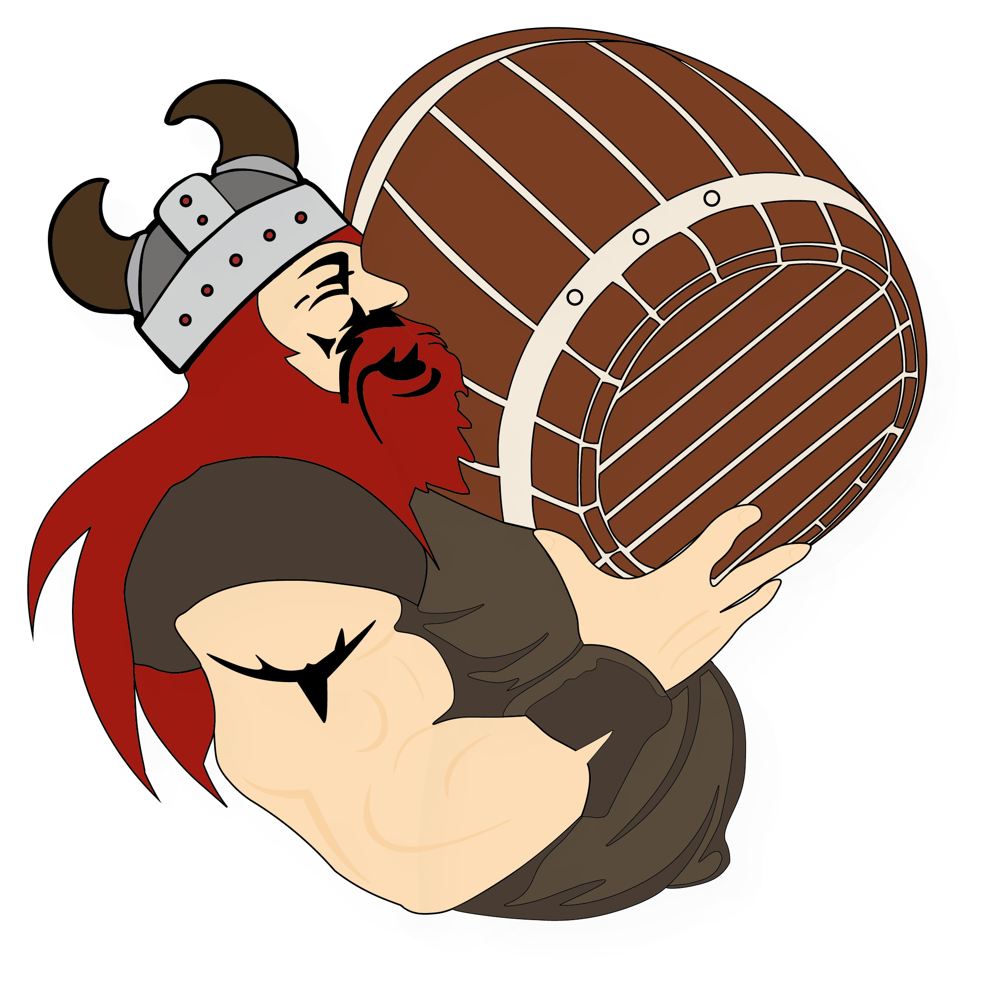

Velkommen til Trøjborg Bryg

Vi er et lokalt mikrobryggeri som brænder for at udvikle og skabe den bedste alkoholfrie øl, som du kommer til at smage. Med én alkoholfri øl eller tre, hindrer det dig ikke i at føle dig på toppen. Det vil altså sige, at selv om du skal til jobsamtale, eksamen eller tante Fies fødselsdag dagen efter, kan du møde op helt uden tømmermænd. Selvom du har nydt en god øl eller tre dagen inden. En ægte win-win-situation.